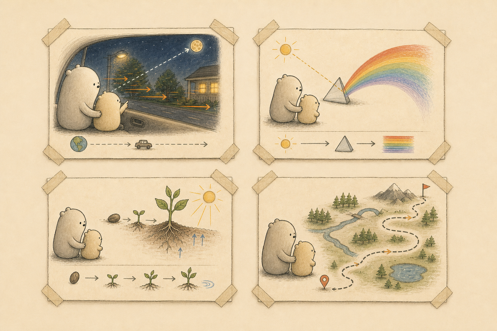

Open the toolkit
Use the GPT, or paste the public prompt into the assistant you already use.
For parents with curious kids
Type your child’s age and question. Wonder Together gives you one visual explainer, a few things to point out, a simple answer to say out loud, and one tiny activity to try together.
Start with the GPT. Builders can install the portable skill below.
Last Tuesday, my kid asked me why the moon was following the car.
I gave a pretty wobbly answer.
Kids ask the questions that should make us pause. Most of the time we’re tired, half-listening, or trying to merge onto a freeway. Wonder Together is a free way to come back with something warm: a clear image, a simple explanation, and something you can try together when the moment comes around.
Recurring guides
The question changes from moons to rainbows to plants, but the same parent-child pair stays with the child through the experience. They are a consistent visual anchor, while each explainer keeps the real wonder at the center.

How it works
Use the GPT, or paste the public prompt into the assistant you already use.
Share the question, your child’s age, and any context that would help the answer feel right.
Show the image, say the simple answer, try the small activity, and skip anything you do not need.
Start here
Use the ready-made GPT when you want the visual explainer and the conversation flow in one place. Bring the child’s age, the question, and any parent context that changes the answer.
Best for parents
Wonder Together keeps the output compact: one image, what to notice, a plain answer, one safe try-it idea, and a parent note.
For builders
Codex and Claude users can install the portable instruction skill directly from the repo. These paths are for people who want to inspect, adapt, or run Wonder Together inside their own workspace.
Best for Codex users.
Add this repo as a plugin marketplace, then install Wonder Together from the Codex plugin directory.
codex plugin marketplace add \
kbo4sho/wonder-together-skill \
--ref mainBest for Claude users.
Use this when your Claude setup supports project skills. After cloning this repo, copy the skill folder into your project so Claude can use the Wonder Together behavior directly.
mkdir -p .claude/skills
cp -R skills/wonder-together .claude/skills/Open source
Wonder Together is an MIT-licensed, instruction-only skill. The safety rules, visual language, public prompt, and sample output are inspectable; this repo does not include a hosted backend, child accounts, database, auth, Stripe, or live GPT configuration.
Questions a thoughtful parent might ask
Wonder Together is a structured parent prompt, not a blank chat box. It asks for the child’s age and context, then shapes the answer into a visual explainer, simple explanation, activity, parent note, and follow-ups.
No. Wonder Together is for the parent or grownup. You read it, you deliver it, and you decide what fits the moment. The practice works best when the child is with you, not alone with a chatbot.
Read every packet before sharing it. The prompt includes guardrails for tender questions and unsafe experiments, but AI can still be wrong or awkward. For medical, legal, emergency, or high-stakes questions, use a qualified person instead.
Not in this free toolkit version. If you use the Custom GPT, the conversation happens inside ChatGPT under your account. If you copy the prompt elsewhere, that platform’s privacy and data settings apply.
Ready for the next question
Use the free toolkit in ChatGPT, or copy the prompt into whatever assistant you already have.